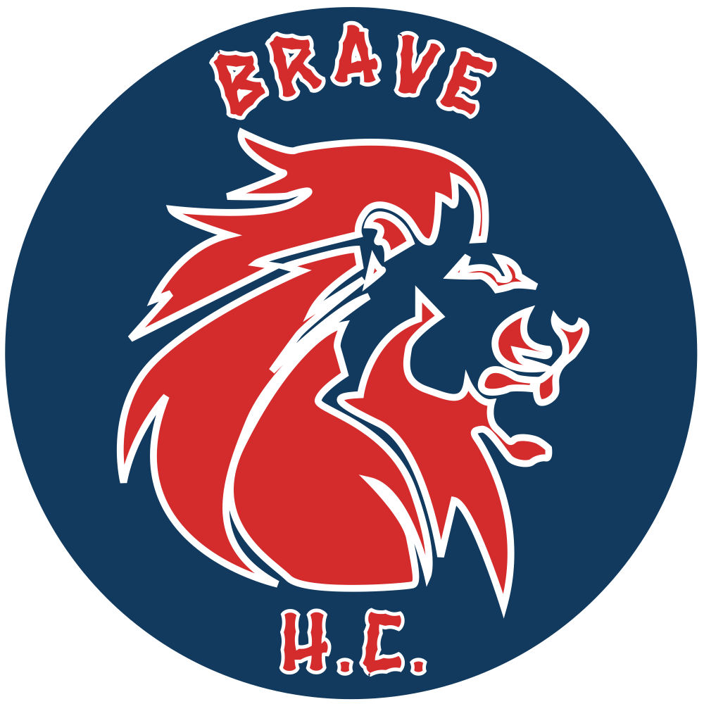

Opponent Player Intelligence
HockeyOS · Sunday adult league · current and historical public records
Back to Brave H.C. Division Centre
Brave H.C. player actuals remain HTO-authoritative. Other teams' figures come from official SVHL season rosters and individual player pages. They may be inaccurate, incomplete, changed, or out of date. Reported games played do not prove attendance at a particular game. VAHL is excluded.
Validating source data…
Public player-season records
| PLAYER | TEAM | GP | G | A | PTS | PIM | PTS/GP | PP / PK / GWG / GTG | RECENT FORM | DEFENSIVE ATTENTION | PRIOR SEASONS |
|---|